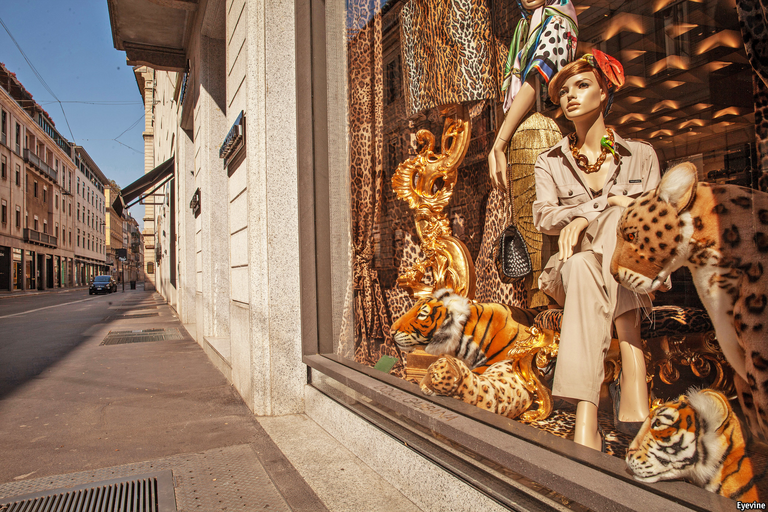
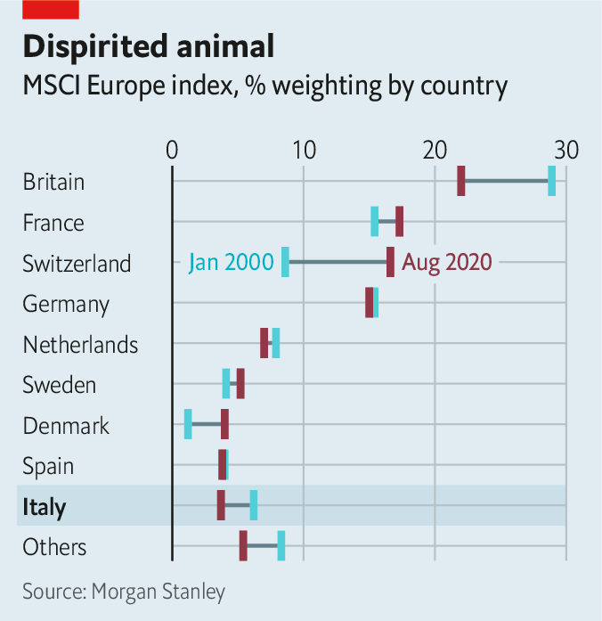
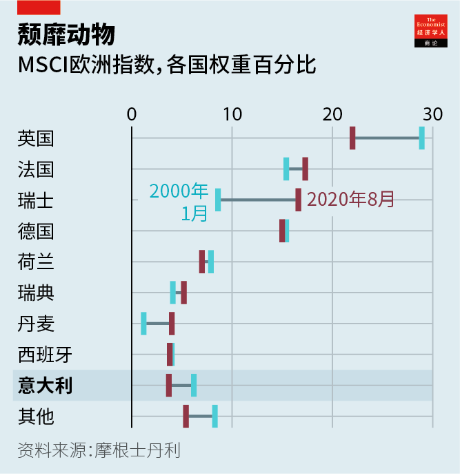
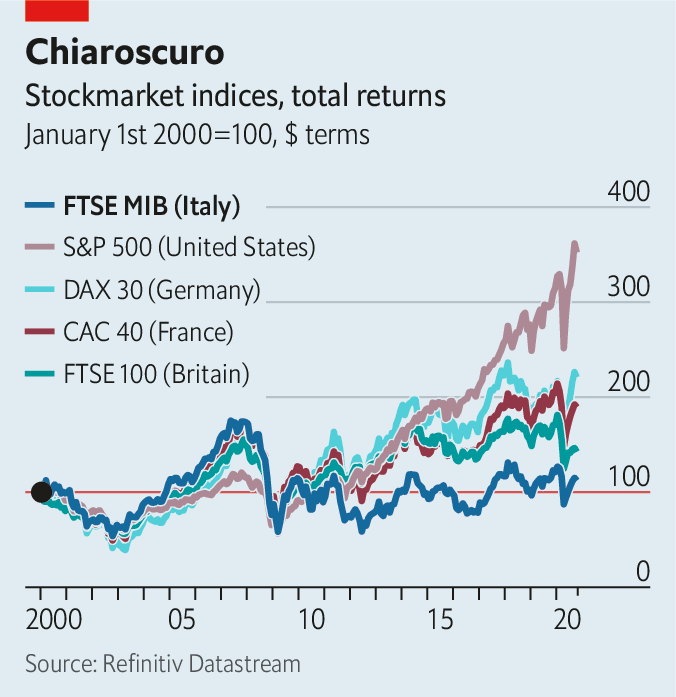
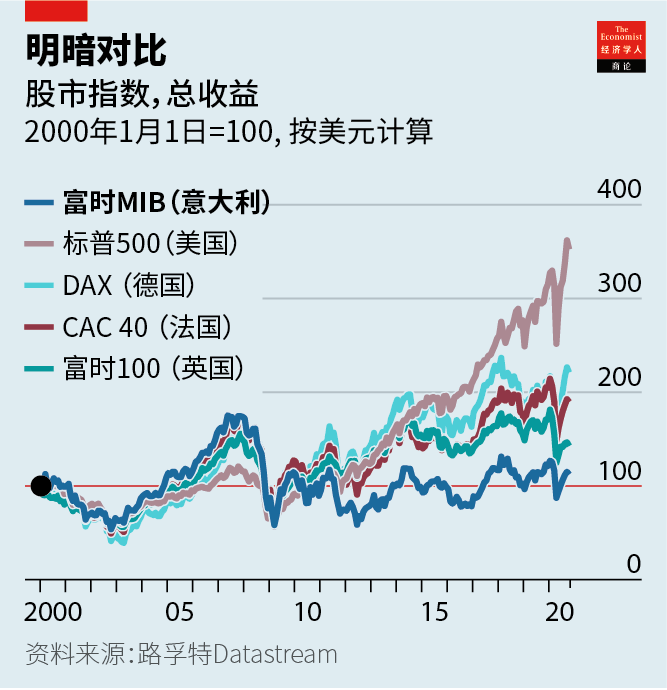

Text
2020-11-30T16:51:55+00:00
Italian business
意大利商业
意大利商業
How the leopard lost its spots
豹失其势
豹失其勢
The fate of Italy SpA offers an object lesson in corporate decline
“意大利股份公司”的命运提供了一本有关企业衰落的活教材
“意大利股份公司”的命運提供了一本有關企業衰落的活教材
FEW WORKS of literature capture the challenges of managing decay better than “The Leopard”, Giuseppe Tomasi di Lampedusa’s masterpiece about Sicilian blue bloods struggling to adapt to the changes ushered in by Italian unification in the 1860s. Replace the “shabby minor gentry” with Silicon Valley parvenus and recently impoverished but now monied masses with emerging China, and the novel also serves as an apt metaphor for the decline of once-princely corporate Italy.
很少有哪部文学作品比《豹》（The Leopard）更好地捕捉了直面衰落之艰难。朱塞佩·托马西·迪·兰佩杜萨（Giuseppe Tomasi di Lampedusa）的这部杰作描述了西西里王国的贵族如何挣扎适应1860年代意大利统一带来的变化。如果把书中“粗鄙的乡村贵族”代之以硅谷的新贵和崛起的中国在不久前脱贫致富的大批民众，那么这部小说也是对曾经高贵的“意大利企业王国”的衰落恰如其分的隐喻。
很少有哪部文學作品比《豹》（The Leopard）更好地捕捉了直面衰落之艱難。朱塞佩·托馬西·迪·蘭佩杜薩（Giuseppe Tomasi di Lampedusa）的這部傑作描述了西西里王國的貴族如何掙扎適應1860年代意大利統一帶來的變化。如果把書中“粗鄙的鄉村貴族”代之以硅谷的新貴和崛起的中國在不久前脫貧致富的大批民眾，那麼這部小說也是對曾經高貴的“意大利企業王國”的衰落恰如其分的隱喻。
“We had the richest and most perfect region of the world but we are old aristocrats who are losing our momentum,” sighs Marco Tronchetti Provera, boss of Pirelli, a 148-year-old tyremaker based in Milan. Many of his fellow chief executives echo di Lampedusa’s Don Fabrizio, who pined for the days when “We were the leopards, the lions.” Like the fictional patriarch, they see the world in upheaval but find themselves unable to do much about it.
“我们曾拥有世上最富裕、最完美的地区，但我们是正在失势的老贵族。”倍耐力（Pirelli）的老板马可·特罗凯蒂·普罗韦拉（Marco Tronchetti Provera）叹道。这家总部位于米兰的轮胎制造商拥有148年历史。普罗韦拉的许多CEO同辈让人想起兰佩杜萨笔下那个怀念“我们是豹，是狮子”的日子的唐·法布里齐奥（Don Fabrizio）。和这位虚构的亲王一样，他们看到世界正处在剧变之中，但意识到自己对此无能为力。
“我們曾擁有世上最富裕、最完美的地區，但我們是正在失勢的老貴族。”倍耐力（Pirelli）的老闆馬可·特羅凱蒂·普羅韋拉（Marco Tronchetti Provera）嘆道。這家總部位於米蘭的輪胎製造商擁有148年歷史。普羅韋拉的許多CEO同輩讓人想起蘭佩杜薩筆下那個懷念“我們是豹，是獅子”的日子的唐·法布里齊奧（Don Fabrizio）。和這位虛構的親王一樣，他們看到世界正處在劇變之中，但意識到自己對此無能為力。
Ironically, when di Lampedusa’s novel was published in 1958 Italy was the opposite of decaying. Its GDP doubled between 1951 and 1963, and by 1973 added another two-thirds. Gianni Agnelli, Fiat’s dashing owner, hobnobbed with the Kennedys. The Red Brigades’ campaign of terror launched in 1970 shook business for over a decade but did not cripple it. Olivetti became the world’s second-biggest computer-maker, behind IBM. Montedison was its seventh-largest chemicals firm. Mediobanca rivalled Lehman Brothers and Lazard in merchant-banking prowess. Benetton brought colourful sweaters to the masses; Giorgio Armani, Gianni Versace and Dolce & Gabbana shoulder-padded Wall Street and Beverly Hills.
讽刺的是，当兰佩杜萨的小说于1958年出版时，意大利恰是衰落的反面。1951年至1963年间它的GDP翻了一番，到1973年又增长了三分之二。菲亚特风度翩翩的老板詹尼·阿涅利（Gianni Agnelli）和肯尼迪家族往来密切。“红色旅”自1970年发起的恐怖活动冲击商界十多年，但没能摧毁它。好利获得（Olivetti）成长为仅次于IBM的全球第二大计算机制造商。蒙特爱迪生（Montedison是当时世界第七大化学品公司。米兰投资银行（Mediobanca）在企业和投行业务方面可与雷曼兄弟和拉扎德相匹敌。贝纳通（Benetton）给人们带去了色彩斑斓的毛衣；乔治·阿玛尼、范思哲和杜嘉班纳（D＆G）为华尔街和比佛利山庄添范儿。
諷刺的是，當蘭佩杜薩的小說於1958年出版時，意大利恰是衰落的反面。1951年至1963年間它的GDP翻了一番，到1973年又增長了三分之二。菲亞特風度翩翩的老闆詹尼·阿涅利（Gianni Agnelli）和肯尼迪家族往來密切。“紅色旅”自1970年發起的恐怖活動衝擊商界十多年，但沒能摧毀它。好利獲得（Olivetti）成長為僅次於IBM的全球第二大計算機製造商。蒙特愛迪生（Montedison是當時世界第七大化學品公司。米蘭投資銀行（Mediobanca）在企業和投行業務方面可與雷曼兄弟和拉扎德相匹敵。貝納通（Benetton）給人們帶去了色彩斑斕的毛衣；喬治·阿瑪尼、范思哲和杜嘉班納（D＆G）為華爾街和比佛利山莊添范兒。
These days Italy SpA is out of style. The country’s doldrums aren’t news; The Economist called it “the real sick man of Europe” 15 years ago. “It escapes no one, and certainly not business,” says Carlo Bonomi, head of Confindustria, Italy’s main business lobby. Even before covid-19, its economy was smaller than it had been before the financial crisis of 2007-09. Its stockmarket is worth under €500bn ($590bn). It accounts for 3.7% of the MSCI index of European stocks, down from 6.2% in 2000, according to Morgan Stanley, a bank (see chart). Only seven Italian firms feature among the world’s 1,000 biggest listed ones. The €77bn market capitalisation of the most valuable, Enel, an electric utility, is a rounding error relative to that of America’s trillion-dollar tech titans.
如今，“意大利股份公司”已经过时。这个国家的萎靡不振不是新闻；本刊在15年前称其为“真正的欧洲病人”。意大利主要商务游说团体意大利工业家联合会（Confindustria）的负责人卡洛·博诺米（Carlo Bonomi）说：“没人能从中逃脱，商界当然就不用说了。”甚至在新冠疫情爆发前，意大利的经济规模就已经小于2007至2009年金融危机前的水平。其股市总值目前不到5000亿欧元（5900亿美元）。摩根士丹利的数据显示，它占MSCI欧洲指数的3.7%，而2000年为6.2%（见图表）。全球1000家最大的上市公司中只有七家来自意大利。意大利国家电力公司（以下简称Enel）770亿欧元的市值为其中最高，但相比万亿美元的美国科技巨头不过是一个可忽略不计的零头。
如今，“意大利股份公司”已經過時。這個國家的萎靡不振不是新聞；本刊在15年前稱其為“真正的歐洲病人”。意大利主要商務遊說團體意大利工業家聯合會（Confindustria）的負責人卡洛·博諾米（Carlo Bonomi）說：“沒人能從中逃脫，商界當然就不用說了。”甚至在新冠疫情爆發前，意大利的經濟規模就已經小於2007至2009年金融危機前的水平。其股市總值目前不到5000億歐元（5900億美元）。摩根士丹利的數據顯示，它佔MSCI歐洲指數的3.7%，而2000年為6.2%（見圖表）。全球1000家最大的上市公司中只有七家來自意大利。意大利國家電力公司（以下簡稱Enel）770億歐元的市值為其中最高，但相比萬億美元的美國科技巨頭不過是一個可忽略不計的零頭。
Rather than confront these challenges, plenty of Italian tycoons have been flogging the family silver. Treasured Italian brands that have gone into foreign hands in the past decade include Bulgari, a jeweller (sold to LVMH, a French luxury group); Luxottica, which makes Ray-Ban shades (and merged with Essilor, a French spectacles firm) and Versace (bought by Michael Kors, an American fashion house). Since 2015 Pirelli’s biggest shareholder has been ChemChina, a state-owned giant. In 2018 Federico Marchetti sold Yoox Net-a-Porter, his online luxury startup and Italy’s rare tech success, to Richemont, a Swiss group.
许多意大利大亨没有直面挑战，而是仓促贱卖传家宝。过去十年间，流入外国人手中的意大利珍贵品牌包括珠宝商宝格丽（卖给了法国奢侈品集团路威酩轩）、生产雷朋眼镜的罗萨奥蒂卡（Luxottica，与法国的依视路眼镜公司合并），以及范思哲（被美国时装品牌迈克·科尔斯收购）。自2015年以来，倍耐力最大的股东是中国国有巨头中国化工集团。2018年，费德里科·马尔凯蒂（Federico Marchetti）把他的奢侈品电商创业公司Yoox Net-a-Porter这个意大利罕见的科技成功案例出售给了瑞士的历峰集团（Richemont）。
許多意大利大亨沒有直面挑戰，而是倉促賤賣傳家寶。過去十年間，流入外國人手中的意大利珍貴品牌包括珠寶商寶格麗（賣給了法國奢侈品集團路威酩軒）、生產雷朋眼鏡的羅薩奧蒂卡（Luxottica，與法國的依視路眼鏡公司合并），以及范思哲（被美國時裝品牌邁克·科爾斯收購）。自2015年以來，倍耐力最大的股東是中國國有巨頭中國化工集團。2018年，費德里科·馬爾凱蒂（Federico Marchetti）把他的奢侈品電商創業公司Yoox Net-a-Porter這個意大利罕見的科技成功案例出售給了瑞士的歷峰集團（Richemont）。
Others have been departing il bel paese. After merging with Chrysler in 2014 Fiat moved its headquarters to London and legal seat to the Netherlands; it is now combining with PSA Group, a French carmaker. (Exor, the Agnelli family’s Dutch-domiciled investment vehicle which owns 28.9% of Fiat-Chrysler’s shares, is also a shareholder in The Economist’s parent company.) Ferrero, the maker of Nutella, has decamped to Luxembourg. This year Campari, producer of the bitter apéritif owned by the Garavoglia clan, picked the Netherlands. It may be joined by Mediaset, Italy’s biggest private broadcaster controlled by Silvio Berlusconi, a scandal-prone former prime minister, which is seeking to move the headquarters of its holding company there. “I keep less than 5% of my total wealth in Italy. I am very careful with this country,” confessed Francesco Trapani, scion of the Bulgari dynasty, in 2018.
其他公司则离开了“美丽国度”。2014年和克莱斯勒合并后，菲亚特把总部迁到了伦敦，把注册地转到了荷兰；现在它正在和法国汽车制造商标致雪铁龙集团（PSA Group）合并。（拥有菲亚特克莱斯勒28.9%的股份的阿涅利家族［Agnelli］在荷兰注册的投资集团Exor也是《经济学人》母公司的股东。）巧克力榛子酱Nutella的生产商费列罗集团（Ferrero）已经迁到卢森堡。今年，由加拉沃利亚家族（Garavoglia）掌控的苦味餐前酒生产商金巴利公司（Campari）选择了荷兰。意大利最大的私营广播公司Mediaset可能也会如此操作，这家由频暴丑闻的意大利前总理西尔维奥·贝卢斯科尼（Silvio Berlusconi）掌控的公司正寻求将其控股公司的总部搬到那里。宝格丽王朝的继承人弗朗切斯科·特拉帕尼（Francesco Trapani）在2018年吐露：“我把我不到5%的身家留在意大利。我对这个国家非常谨慎。”
其他公司則離開了“美麗國度”。2014年和克萊斯勒合并後，菲亞特把總部遷到了倫敦，把註冊地轉到了荷蘭；現在它正在和法國汽車製造商標緻雪鐵龍集團（PSA Group）合并。（擁有菲亞特克萊斯勒28.9%的股份的阿涅利家族［Agnelli］在荷蘭註冊的投資集團Exor也是《經濟學人》母公司的股東。）巧克力榛子醬Nutella的生產商費列羅集團（Ferrero）已經遷到盧森堡。今年，由加拉沃利亞家族（Garavoglia）掌控的苦味餐前酒生產商金巴利公司（Campari）選擇了荷蘭。意大利最大的私營廣播公司Mediaset可能也會如此操作，這家由頻暴醜聞的意大利前總理西爾維奧·貝盧斯科尼（Silvio Berlusconi）掌控的公司正尋求將其控股公司的總部搬到那裡。寶格麗王朝的繼承人弗朗切斯科·特拉帕尼（Francesco Trapani）在2018年吐露：“我把我不到5%的身家留在意大利。我對這個國家非常謹慎。”
Many other firms are shadows of their former selves. In 20 years the market value of Generali, an insurer, has more than halved, to €19bn. Telecom Italia’s has shrivelled by nearly 90%, to €7bn. Intesa Sanpaolo and UniCredit, two big banks, tried their hand at consolidation with ambitious deals in Europe, only to retrench.
其他许多公司辉煌不再。20年间，保险公司忠意（Generali）的市值减少了一半以上，跌至190亿欧元。意大利电信缩水近90%，仅剩70亿欧元。两家大型银行联合圣保罗银行（Intesa Sanpaolo）和裕信银行（UniCredit）尝试在欧洲展开大型合并交易未果，结果只是紧缩了业务。
其他許多公司輝煌不再。20年間，保險公司忠意（Generali）的市值減少了一半以上，跌至190億歐元。意大利電信縮水近90%，僅剩70億歐元。兩家大型銀行聯合聖保羅銀行（Intesa Sanpaolo）和裕信銀行（UniCredit）嘗試在歐洲展開大型合并交易未果，結果只是緊縮了業務。
Three main reasons explain corporate Italy’s slide into irrelevance. They have to do with a self-reinforcing lack of financial, social and human capital.
令意大利商界丧失重要地位的原因主要有三个：缺乏财务、社会和人力资本，而这种匮乏会自我强化。
令意大利商界喪失重要地位的原因主要有三個：缺乏財務、社會和人力資本，而這種匱乏會自我強化。
According to the OECD, a club of industrialised countries, 40% of Italian corporate assets are financed by short-term debt, more than among big European peers. Credit is granted on a basis of history, so new firms find it hard to raise money. Political risk—embodied by the rise to power in 2018 of the antibusiness Five Star Movement (M5S)—plays on the nerves. Reliance on banks means that when they get into trouble—as in the financial crisis and the ensuing euro crisis—all their corporate clients suffer, not just the delinquent ones.
工业化国家俱乐部经合组织（OECD）称，意大利公司资产中有40%通过短期债务融资，超过大型欧洲同业的这一比例。贷款是基于信用历史发放的，因此新公司很难筹到资金。反商业的“五星运动”（M5S）于2018年的崛起所显现的政治风险令人不安。对银行的依赖意味着当银行陷入困境时（例如在金融危机和随之爆发的欧债危机中），它们所有的企业客户都会遭殃，而不仅仅是那些违约的客户。
工業化國傢俱樂部經合組織（OECD）稱，意大利公司資產中有40%通過短期債務融資，超過大型歐洲同業的這一比例。貸款是基於信用歷史發放的，因此新公司很難籌到資金。反商業的“五星運動”（M5S）於2018年的崛起所顯現的政治風險令人不安。對銀行的依賴意味着當銀行陷入困境時（例如在金融危機和隨之爆發的歐債危機中），它們所有的企業客戶都會遭殃，而不僅僅是那些違約的客戶。
All this constrains investment and makes Italian companies more vulnerable to macroeconomic shocks—of which the covid-19 pandemic is the latest. Cerved, a ratings agency, reckons that even in the best case perhaps 7% of non-financial firms are at risk of default this year. In the worst case that could rise above 10%.
所有这些都限制了投资，使意大利公司更易受到宏观经济冲击的影响——新冠疫情是最新的一轮。评级机构Cerved估计，即使在最好的情况下，今年仍有7%的非金融公司有违约风险。而最糟的情况下可能会超过10%。
所有這些都限制了投資，使意大利公司更易受到宏觀經濟衝擊的影響——新冠疫情是最新的一輪。評級機構Cerved估計，即使在最好的情況下，今年仍有7%的非金融公司有違約風險。而最糟的情況下可能會超過10%。
Italy’s capital markets are shallow compared with the rest of Europe, let alone America. It has no venture-capital industry to speak of. Business elites grumble about Italians’ aversion to investing in their own stockmarket, despite being among the world’s most prodigious savers. Domenico Siniscalco, a former finance minister, likens it to “an oil producing country without an oil industry”. Investors are wary of putting money into listed firms controlled by founding families or the state, which dominate Italy’s shareholder registers—and which prevent their companies from raising new shares, fearing dilution.
意大利的资本市场深度不及欧洲其他地区，更不用说和美国比了。它没有值得一提的风投行业。商界精英抱怨意大利人不愿投资自己的股票市场，尽管他们是全世界存钱最多的人群之一。前财政部长多梅尼科·西尼斯卡科（Domenico Siniscalco）把意大利比作“没有石油产业的产油国”。投资者对于把资金投到由创始家族或国家控股的上市公司心存警惕，这些控股方雄霸意大利的股东名册，因为担心自己的股权稀释而阻止其企业增发新股。
意大利的資本市場深度不及歐洲其他地區，更不用說和美國比了。它沒有值得一提的風投行業。商界精英抱怨意大利人不願投資自己的股票市場，儘管他們是全世界存錢最多的人群之一。前財政部長多梅尼科·西尼斯卡科（Domenico Siniscalco）把意大利比作“沒有石油產業的產油國”。投資者對於把資金投到由創始家族或國家控股的上市公司心存警惕，這些控股方雄霸意大利的股東名冊，因為擔心自己的股權稀釋而阻止其企業增發新股。
Confidence in big business is further eroded by a constant gusher of scandals. Every few months a business bigwig gets into hot water. In July prosecutors requested an eight-year prison sentence for the boss of Eni, an oil major, for allegedly bribing Nigerian officials to secure an oil block. He and the company deny wrongdoing.
丑闻迭起进一步削弱了人们对大企业的信心。每隔几个月就有一个商界大佬惹上麻烦。7月，意大利检方要求将石油巨头埃尼公司（Eni）的老板判处八年刑期，指控他贿赂尼日利亚官员以取得一块油田的开采权。他和公司否认有不法行为。
醜聞迭起進一步削弱了人們對大企業的信心。每隔幾個月就有一個商界大佬惹上麻煩。7月，意大利檢方要求將石油巨頭埃尼公司（Eni）的老闆判處八年刑期，指控他賄賂尼日利亞官員以取得一塊油田的開採權。他和公司否認有不法行為。
Roman tragedy
罗马悲剧
羅馬悲劇
Disenchantment with corporate Italy sows more mistrust, depleting its already thin social capital. A recent report found that nine in ten Italians want caps on executive pay, the highest share among seven Western countries. That would add to already baroque red tape that is a barrier for upstart firms. Italy ranks 58th out of 190 countries in the World Bank’s “Doing Business” survey. It comes a dismal 97th on securing building permits, 98th for starting new businesses, 122nd at enforcing contracts and 128th on tax rules.
对意大利企业的不满情绪加剧了人们的不信任感，耗尽了本已薄弱的社会资本。最近一份报告发现，九成意大利人希望限制高管的薪酬，是七个西方国家中比例最高的。这将在已堪称巴洛克式的繁文缛节上再添一笔，给新兴企业设置了重重门槛。在世界银行的“营商环境”调查中，意大利在190个国家中排名第58位。它在建筑许可核批这一项排名低至第97位，注册新公司排名第98，合同履约排名第122，税法规章第128。
對意大利企業的不滿情緒加劇了人們的不信任感，耗盡了本已薄弱的社會資本。最近一份報告發現，九成意大利人希望限制高管的薪酬，是七個西方國家中比例最高的。這將在已堪稱巴洛克式的繁文縟節上再添一筆，給新興企業設置了重重門檻。在世界銀行的“營商環境”調查中，意大利在190個國家中排名第58位。它在建築許可核批這一項排名低至第97位，註冊新公司排名第98，合同履約排名第122，稅法規章第128。
Rather than improving the physical and legal infrastructure that would help all firms, government money goes to bailing out perennial failures. This year the state once again rescued Alitalia, the endlessly loss-making flag-carrier. Italy has no equivalent of the Fraunhofer institutes that help Germany’s medium-sized firms stay at the cutting edge of their fields, observes Fabrizio Barca, an economist and former development minister. “If we had the infrastructure of the Germans we would be six or seven times more competitive,” says Marco Giovannini, boss of Guala Closures, a global leader in the niche market for bottle tops. “We have to compete against inefficiency.” In 2017 he opened Guala’s main research centre not in its Piedmont home but in Luxembourg.
政府的资金没有花在改善能帮助所有企业的实物和法律基础设施上，而是拿去救助那些常年失败者。今年，政府再度援助了无休止亏损中的国有意大利航空公司（Alitalia）。前经济发展部长、经济学家法布里佐·巴萨（Fabrizio Barca）指出，意大利没有像弗劳恩霍夫协会（Fraunhofer）那样能帮助德国中型企业保住行业领先优势的机构。“如果我们拥有德国人的基础设施，我们的竞争力将提高六七倍。”瓜拉瓶盖公司（Guala Closures）的老板马可·焦万尼尼（Marco Giovannini）说。这家公司是瓶盖这个利基市场的全球领军者。“我们必须与效率低下竞争。”2017年，他选择在卢森堡而不是位于皮埃蒙特大区的公司总部开设了瓜拉的主要研发中心。
政府的資金沒有花在改善能幫助所有企業的實物和法律基礎設施上，而是拿去救助那些常年失敗者。今年，政府再度援助了無休止虧損中的國有意大利航空公司（Alitalia）。前經濟發展部長、經濟學家法布里佐·巴薩（Fabrizio Barca）指出，意大利沒有像弗勞恩霍夫協會（Fraunhofer）那樣能幫助德國中型企業保住行業領先優勢的機構。“如果我們擁有德國人的基礎設施，我們的競爭力將提高六七倍。”瓜拉瓶蓋公司（Guala Closures）的老闆馬可·焦萬尼尼（Marco Giovannini）說。這家公司是瓶蓋這個利基市場的全球領軍者。“我們必須與效率低下競爭。”2017年，他選擇在盧森堡而不是位於皮埃蒙特大區的公司總部開設了瓜拉的主要研發中心。
Di Lampedusa’s characters might recognise the third shortage—of human capital—as the flipside of pride. In the post-war era, when it fuelled founders’ devotion to their creations, this was a virtue (as to some extent it is today in Silicon Valley). Now it looks like obstinacy. Bankers talk of multiple failed attempts to persuade Mr Armani to build a bigger group in the mould of LVMH. During Italy’s lockdown a photo of him dressing the windows of his Milan store added to the myth of Italian creative genius. LVMH’s billionaire owner, Bernard Arnault, gets others to do that menial task, so he can focus on business.
兰佩杜萨笔下的人物可能认得出来，第三种短缺——人力资源的短缺——是自尊的一体两面。在战后时代，当这种尊严感激发创始人对其创造成果的热忱时，它是一种美德（某种程度上在今天的硅谷也是如此）。如今它看来却是一种执拗。银行家们谈论曾多次劝说阿玛尼先生建立像路威酩轩那样更大的集团无果。意大利因疫情封锁期间，一张他在米兰专卖店布置橱窗的照片增添了意大利创意天才的神话色彩。路威酩轩的亿万富翁老板伯尔纳·阿尔诺（Bernard Arnault）则把这种“粗活”留给其他人，这样他就可以专注在公司经营上。
蘭佩杜薩筆下的人物可能認得出來，第三種短缺——人力資源的短缺——是自尊的一體兩面。在戰後時代，當這種尊嚴感激發創始人對其創造成果的熱忱時，它是一種美德（某種程度上在今天的硅谷也是如此）。如今它看來卻是一種執拗。銀行家們談論曾多次勸說阿瑪尼先生建立像路威酩軒那樣更大的集團無果。意大利因疫情封鎖期間，一張他在米蘭專賣店布置櫥窗的照片增添了意大利創意天才的神話色彩。路威酩軒的億萬富翁老闆伯爾納·阿爾諾（Bernard Arnault）則把這種“粗活”留給其他人，這樣他就可以專註在公司經營上。
In 2017 Guido Corbetta of Bocconi University estimated that half of first-generation Italian firms have an owner-boss who is over 60, and a quarter have one who is at least 70. Italian boardrooms’ denizens seem almost as ancient as the Renaissance art adorning their walls. Italy’s most prominent businessmen—they are almost exclusively male—are octogenarians: Mr Berlusconi (84), Leonardo Del Vecchio of Luxottica (85), Luciano Benetton, the clothing clan’s patriarch (85), Mr Armani (86).
博科尼大学（Bocconi University）的圭多·科尔贝塔（Guido Corbetta）在2017年估计，意大利第一代企业中有半数有一位超过60岁的控股CEO，四分之一有一位至少70岁的。意大利董事会的成员看起来简直和会议室墙上挂着的文艺复兴时期绘画那样古老。意大利最著名的商人（几乎清一色男性）都已是八旬老人：贝卢斯科尼（84岁）、罗萨奥蒂卡的莱昂纳多·德尔·韦基奥（Leonardo Del Vecchio，85岁）、时尚巨头贝纳通家族的大家长卢西亚诺·贝纳通（Luciano Benetton，85岁）、阿玛尼（86岁）。
博科尼大學（Bocconi University）的圭多·科爾貝塔（Guido Corbetta）在2017年估計，意大利第一代企業中有半數有一位超過60歲的控股CEO，四分之一有一位至少70歲的。意大利董事會的成員看起來簡直和會議室牆上掛着的文藝復興時期繪畫那樣古老。意大利最著名的商人（幾乎清一色男性）都已是八旬老人：貝盧斯科尼（84歲）、羅薩奧蒂卡的萊昂納多·德爾·韋基奧（Leonardo Del Vecchio，85歲）、時尚巨頭貝納通家族的大家長盧西亞諾·貝納通（Luciano Benetton，85歲）、阿瑪尼（86歲）。
No wonder Italians feel the system is rigged in favour of a few ageing billionaires and plump for populists like the M5S. Talented youngsters shy away from a career in the unloved business world. “There is now little opportunity anywhere in Italy, even for the wealthy and well-connected,” says Andrea Alemanno of Ipsos, a research firm.
难怪意大利人会觉得商业系统被操纵了，而只对少数老迈的亿万富翁有利。他们选择支持五星运动这样的民粹主义者。有才华的年轻人不愿在失宠的商界谋职。研究公司Ipsos的安德烈亚·阿莱曼诺（Andrea Alemanno）说，“即便是对富人和人脉广阔的人来说，如今在整个意大利都没什么机会可言。”
難怪意大利人會覺得商業系統被操縱了，而只對少數老邁的億萬富翁有利。他們選擇支持五星運動這樣的民粹主義者。有才華的年輕人不願在失寵的商界謀職。研究公司Ipsos的安德烈亞·阿萊曼諾（Andrea Alemanno）說，“即便是對富人和人脈廣闊的人來說，如今在整個意大利都沒什麼機會可言。”
Despite this self-perpetuating cycle, examples of Italy’s post-war industrial vigour persist. Enel is a world leader in clean energy. In certain areas “pocket multinationals”, as Vittorio Merloni, an entrepreneur, dubbed them in the 1990s, churn out wares admired the world over: Lavazza and Illy (coffee), Moncler and Ermenegildo Zegna (fashion), IMA and Marchesini (packaging), or Technogym (fitness kit)
尽管存在这种自我延续的恶性循环，战后意大利那种工业活力的例子依然存在。Enel是清洁能源领域的全球领头羊。在某些领域，“口袋跨国公司”——企业家维托里奥·梅洛尼（Vittorio Merloni）在1990年代创造的称呼——生产出了在全世界备受喜爱的商品：拉瓦萨（Lavazza）和意利（Illy）的咖啡、盟可睐（Moncler）和杰尼亚（Ermenegildo Zegna）的服饰、意马（IMA）和马克西尼（Marchesini）的包装机械，或泰诺健（Technogym）的健身器材。
儘管存在這種自我延續的惡性循環，戰後意大利那種工業活力的例子依然存在。Enel是清潔能源領域的全球領頭羊。在某些領域，“口袋跨國公司”——企業家維托里奧·梅洛尼（Vittorio Merloni）在1990年代創造的稱呼——生產出了在全世界備受喜愛的商品：拉瓦薩（Lavazza）和意利（Illy）的咖啡、盟可睞（Moncler）和傑尼亞（Ermenegildo Zegna）的服飾、意馬（IMA）和馬克西尼（Marchesini）的包裝機械，或泰諾健（Technogym）的健身器材。
And Italy remains a country of enterprise. The OECD reckons nearly a quarter of Italian firms are high-growth, more than in most big European countries. Johann Rupert, the South African financier behind Richemont, has mused that Italy’s craftsmen might benefit from a failure to adapt to globalisation as the world comes to prize their old-fashioned skills. Pirelli’s Mr Tronchetti Provera praises the deal with ChemChina, which let the tyremaker’s headquarters and technology stay in Milan, as “an opportunity to further strengthen our position in China without giving up Italian roots”. Some see Italy’s less hard-edged capitalists as an antidote to Wall Street; last year Jeff Bezos made a pilgrimage to Brunello Cucinelli, founder of a posh-sweater company who advocates a humanistic capitalism.
而且意大利仍然是一个充满企业家精神的国度。经合组织（OECD）估计，近四分之一的意大利公司在高速增长，数量超过了大多数欧洲大国。执掌历峰的南非大金主约翰·鲁珀特（Johann Rupert）曾经思考过，意大利的工匠们可能会因为没能适应全球化而受益，因为世界开始珍视他们的传统技能。倍耐力的特龙凯蒂·普罗韦拉（Tronchetti Provera）称赞和中国化工的交易是“一个让我们进一步在中国立足却不放弃意大利根基的机会”，因为这笔交易把这家轮胎制造商的总部和技术都留在了米兰。有些人认为意大利不那么残酷的资本家是华尔街的解药。去年，杰夫·贝索斯专程拜访了他推崇备至的毛衣奢牌创始人、提倡“人道资本主义”的布鲁内洛·库奇内利（Brunello Cucinelli）。
而且意大利仍然是一個充滿企業家精神的國度。經合組織（OECD）估計，近四分之一的意大利公司在高速增長，數量超過了大多數歐洲大國。執掌歷峰的南非大金主約翰·魯珀特（Johann Rupert）曾經思考過，意大利的工匠們可能會因為沒能適應全球化而受益，因為世界開始珍視他們的傳統技能。倍耐力的特龍凱蒂·普羅韋拉（Tronchetti Provera）稱讚和中國化工的交易是“一個讓我們進一步在中國立足卻不放棄意大利根基的機會”，因為這筆交易把這家輪胎製造商的總部和技術都留在了米蘭。有些人認為意大利不那麼殘酷的資本家是華爾街的解藥。去年，傑夫·貝索斯專程拜訪了他推崇備至的毛衣奢牌創始人、提倡“人道資本主義”的布魯內洛·庫奇內利（Brunello Cucinelli）。
In 2011, shortly before he became governor of the European Central Bank, Mario Draghi warned fellow Italians that Venice in the 17th century and Amsterdam in the 18th century planted the seeds of their collapse by putting elite privilege ahead of innovation. Corporate Italy can hang on to what is left of its sheen. But, as Don Fabrizio’s thrusting nephew, Tancredi, told his uncle, “If we want things to stay as they are, things will have to change.”■
在2011年出任欧洲央行行长的前不久，马里奥·德拉吉（Mario Draghi）提醒自己的意大利同胞，17世纪的威尼斯和18世纪的阿姆斯特丹都因为将精英特权置于创新之上而埋下了自己衰落的种子。意大利企业王国可以紧拽着自己的余辉不放。但是，正如唐·法布里齐奥那个年轻气盛的外甥坦克雷迪（Tancredi）告诉他叔叔的那样，“如果我们想要事情保持原样，那么它们必须改变。”
在2011年出任歐洲央行行長的前不久，馬里奧·德拉吉（Mario Draghi）提醒自己的意大利同胞，17世紀的威尼斯和18世紀的阿姆斯特丹都因為將精英特權置於創新之上而埋下了自己衰落的種子。意大利企業王國可以緊拽着自己的餘輝不放。但是，正如唐·法布里齊奧那個年輕氣盛的外甥坦克雷迪（Tancredi）告訴他叔叔的那樣，“如果我們想要事情保持原樣，那麼它們必須改變。”